The Static Input/Output (Static I/O) instrument allows easy configuration of input and output devices on the digital lines. It is called “static” because the value from the digital lines corresponds directly to the values generated or read by the input and output devices. Once a signal value is set, it remains in that state until a new value is set.
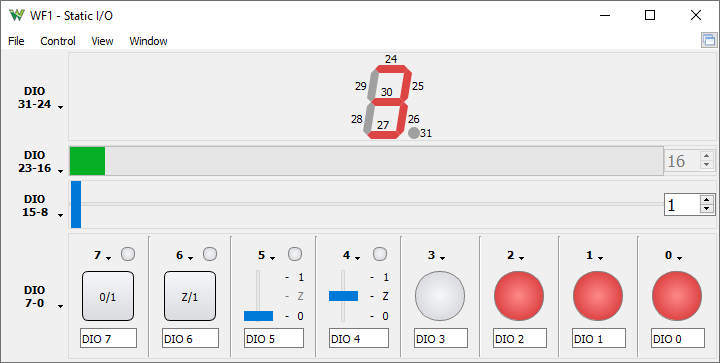
See Menu Strips in Common Interfaces.
The Static I/O controls the digital signals of the device, which are managed in groups of eight: 31-24, 23-16, 15-8, and 7-0. The number of I/O signals depends on the device.
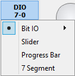
The group type is selected using the group menu. For each line group, the following types can be set: Bit I/O, Slider, Progress bar, or 7 Segment.
This group assigns a specific control for each of the eight signals in the group. The controls include: LED, Button, and Switch.
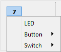
This is an input device, indicating the digital line's state.
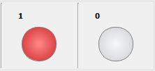
This is both an input and output device, implementing a push button with LED indicator. The button has two states: pressed and released.
The button types select the output for released and pressed states.
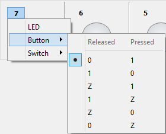 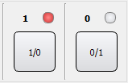
This is both an input and output device, implementing a push/pull switch with LED indicator.
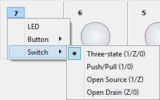 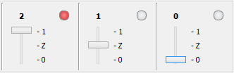
The slider configures the eight digital lines according to either the value of the cursor's position or the value entered in the value field. The value is used as an 8-bit binary representation where the highest number digital line is the most significant bit (MSB) and each digital line gets the value of the corresponding bit.
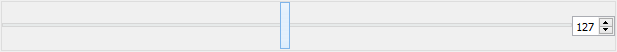
This type implements an input device used in displaying values between 0 and 255 as a progress bar and value display. The digital values of the eight input lines are converted into a value between 0 and 255. The digital lines' binary values are used as bits in a binary representation where the highest number digital line is the most significant bit (MSB).
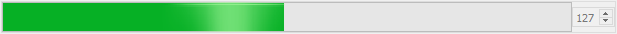
This type implements an input device for displaying a seven-segment digit and a decimal point. Each of the eight digital lines correspond to one of the segments or the decimal point, according to the legend displayed below.
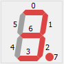